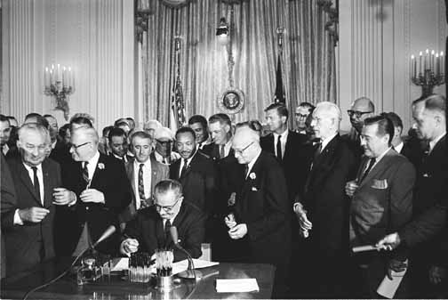
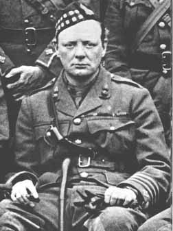
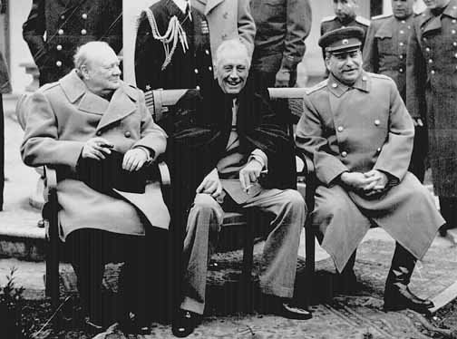
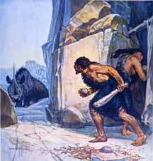

| Vol. 18, No. 1 | January 2007 |
CONTENTS
Why Michigan Needed to Ban Preferences
‘Diversity Matters at Michigan’
Who Led the Charge?
Warnings from the Lion
From Sex Symbol to French Patriot
O Tempora, O Mores!
Letters from Readers
COVER STORY
Why Michigan Needed to Ban Preferences
Discrimination got worse after the court rulings.
On November 7, the Michigan electorate voted 58 to 42 percent in favor of what came to be called “Proposal 2,” which was, to quote its text, “A proposal to amend the state constitution to ban affirmative action programs that give preferential treatment to groups or individuals based on their race, gender, color, ethnicity or national origin for public employment, education or contracting purposes.” Its intent was the same as that of the Civil Rights Act of 1964: to guarantee equal treatment. Like the voters of California who passed a similar ban in 1996, and the voters of Washington State who did the same in 1998, the people of Michigan were, in effect, saying “and now we really mean it.”

|
Proposal 2 passed in the face of nearly unanimous opposition from business, the media, and political leaders of both parties, including former Secretary of State Colin Powell and Illinois Senator Barack Obama. Opponents spent four times as much on their campaign to defeat it as its supporters spent. Even the American Civil Liberties Union and the Catholic Church forgot their differences and joined to oppose it.
“Affirmative action” supporters are obsessed with preferences for non-whites, but because Proposal 2 prohibited sex as well as race discrimination, many trumpeted the alleged horrors in store for women. The Detroit News, for example, editorialized idiotically that it would jeopardize “breast cancer screenings [and] domestic-violence shelters for women.”
Much of the opposition consisted of outright lies. Michigan Governor Jennifer Granholm got it exactly wrong-way around when she said the preferences ban would take away the “opportunity to compete on a level playing field.” One United Michigan, the best-funded and most “mainstream” of the pro-discrimination groups, claimed Proposal 2 would “immediately eliminate opportunities for women and minorities to have equal access to jobs, education, and contracts in Michigan.” One of its radio ads was nothing short of hysterical: “If you could have prevented 9/11 from ever happening — would you have? If you could have prevented Katrina — what would you have done? On November 7 there’s a national disaster headed for Michigan: Proposal 2.”
| “There’s national disaster headed for Michigan: Proposal 2.” |
|---|
A heavily-black pro-discrimination group called By Any Means Necessary claimed the ban would “give [the state’s] universities, its local governments, its counties, and its state bodies the right to discriminate against blacks, Latinos, and women in violation of our federally guaranteed equal-rights protections.” This is typical of our times: eliminating official discrimination in favor of blacks and Hispanics is discrimination against them.
By Any Means Necessary was the group that bused hundreds of black high school students to a meeting of the Board of Canvassers, whose job it was to put the language of the proposal on the ballot. Shouting “They say Jim Crow; we say hell no,” they jumped up on chairs, knocked over a table, and physically prevented the canvassers from acting.
This sort of thing probably helped the proposal, and the voters of Michigan went on to vote more or less as one would expect: Fifty-nine percent of white women and 70 percent of white men voted for the ban, 82 percent of non-white women voted to keep racial preferences. Perhaps more significant, no fewer than 86 percent of blacks and 69 percent of Hispanics voted to keep racial preferences. What does this tell us about what blacks and Hispanics will do once they are state majorities?
On November 8, the day after the proposal passed, the president of the University of Michigan (U-M), Mary Sue Coleman, staggered to the microphone in a state of distress. In return for her annual salary of $742,148, the taxpayers of Michigan got the following statement: “I will not allow this university to go down the path of mediocrity. That is not Michigan. Diversity makes us strong, and it is too critical to our mission, too critical to our excellence, and too critical to our future to simply abandon.” (See “highlights” from her speech on page 5.)
We shall see below the extent of the racial discrimination U-M practiced in order to prevent “mediocrity” and attain “diversity.” It did so in the shelter of two widely publicized Supreme Court decisions.
In June 2003, in Gratz v. Bollinger, the Supreme Court ruled that the method used by U-M’s undergraduate College of Literature, Science and Arts at Ann Arbor to practice racial discrimination was unconstitutional (see “What the Supreme Court Did,” AR, Aug. 2003). The university had been assigning applicants a certain number of points for various qualifications and characteristics, including race. For example, an outstanding essay earned a maximum of three points; being the child of an alumnus, four points; personal achievement, leadership, or public service, a maximum of five points; a perfect score on the SAT or ACT, 12 points; and being black, Hispanic, or Native American 20 points. The only other qualification worth 20 points was the difference between a 4.0 (i.e., straight As) high school GPA (grade point average) and a 3.0 (a B average). Socioeconomic background made no difference. The child of a black or Hispanic multimillionaire had an automatic 20 point advantage over the child of non-English-speaking Bulgarian immigrants.
|  |
| Lyndon Johnson signs the Civil Rights Act of 1964. |
|---|
The Supreme Court ruled that racial discrimination in admissions does not violate the Constitution, but the mechanical, numerical manner in which the undergraduate college implemented it does. On the same day, the Supreme Court ruled in Grutter v. Bollinger that the discrimination U-M’s law school practiced, which was at least as great as that practiced by the undergraduate school, was being done in the correct, flexible, constitutional manner. As the justices put it, race was part of a “highly individualized, holistic review of each applicant’s file,” rather than the cold formula the undergraduate school used. However, the majority also stated:
“It would be a sad day indeed, were America to become a quota ridden society, with each identifiable minority assigned proportional representation in every desirable walk of life. But that is not the rationale for programs of preferential treatment; the acid test of their justification will be their efficacy in eliminating the need for any racial or ethnic preferences at all… We expect that in twenty-five years from now, the use of racial preferences will no longer be necessary.”
In their dissent from the majority in the Gratz decision, Justices Ruth Ginsburg and David Souter pointed out that rulings like these would simply encourage universities to discriminate with “winks, nods, and disguises,” rather than openly and honestly. That, of course, is exactly what U-M proceeded to do, and the evidence now is available for all to see.
The Center for Equal Opportunity (CEO) and the Michigan Association of Scholars have obtained data on the admissions policies and academic performance of students in Michigan’s undergraduate, law, and medical schools since the Grutter and Gratz decisions, and have published them on CEO’s website (www.ceousa.org).
The median combined verbal and math SAT scores of undergraduates admitted in 2005 was 1160 for blacks, 1260 for Hispanics, 1350 for whites, and 1400 for Asians (scores run from 400 to 1600). The median high school grade point average was 3.4 for blacks, 3.6 for Hispanics, 3.8 for Asians, and 3.9 for whites. A black or Hispanic in-state, male applicant with no alumni connection, a combined SAT score of 1240, and a 3.2 high school GPA had a 90 percent chance of being admitted. A white or Asian with the same record had a 10 percent chance.
This level of racial discrimination was considerably greater than before the Gratz and Grutter decisions, as shown by changes in what is called the odds ratio. This is the difference in chances of being admitted for applicants of different races with the same SAT or ACT score and high school GPA, controlling for in-state/out-of-state residence, sex, and alumni connections. In 2005, a black applicant was 71 times more likely to be admitted than a white with the same SAT score, high school grades, and background. For applicants who took the ACT, the odds ratio was 63 to one. The Hispanic-white odds ratios were 46 to one for the SAT and 48 to one for the ACT. For students admitted in 1999 — before the Supreme Court decisions — the odds ratios were not so unfavorable to whites: The black-white odds ratio was 27 to one on the SAT, and 49 to one on the ACT; the Hispanic-white odds ratio was 12 to one on the SAT and 32 to one on the ACT. (To put these ratios into perspective, a smoker is 14 times more likely to die of lung cancer than a non-smoker.) The clear, numerical method of discrimination U-M used before the Supreme Court rulings held the admissions office in check; “flexible,” “holistic” discrimination removed these restraints.
As always, discrimination in admissions is reflected in subsequent academic performance. Below are the average college GPAs of students admitted to Michigan in 2004 (the most recent year for which this information is available), at the 75th percentile of their groups (i.e., 25 percent had a higher average), the median of their group, and the 25th percentile (i.e., 75 percent did better):
| Group | 75th | Median | 25th |
|---|---|---|---|
| Blacks | 3.15 | 2.84 | 2.47 |
| Hispanics | 3.34 | 2.99 | 2.65 |
| Asians | 3.53 | 3.26 | 2.94 |
| Whites | 3.60 | 3.33 | 2.99 |
The proportions of students admitted to U-M in 2004, who later went on academic probation were: blacks, 28 percent; Hispanics, 23 percent; Asians, 8 percent; whites, 5 percent. In this context, it is worth noting, as I explain in my book, The Affirmative Action Hoax, that blacks and Hispanics receive massive preferences in college grading, and take much easier courses than whites and Asians.
It is significant also that the academic performance of whites was better than that of Asians. That was also true of the two other years, 1999 and 2003, for which information on grades is available. Nevertheless, opponents of affirmative action at U-M and elsewhere have concentrated on its unfairness to Asians. In fact, whites are the greatest victims of affirmative action, but opponents claim that Asians are the main victims in order not to have to defend whites.
The main basis for the claim that Asians are the primary victims of affirmative action is that at most universities their average combined verbal and math SAT score is higher than that of whites. However, the combined score is misleading. Asians have a considerably higher average math score than whites, but a lower average verbal score. The math difference is greater than the verbal difference, but for most university subjects, the verbal test is a better indicator of academic performance. The white/Asian difference in average ACT scores for students admitted to U-M was negligible, and whites had higher average high school grades.
| By Any Means Necessary at the hustings. |
|---|
At U-M’s law school, racial preferences did decline after the 2003 Supreme Court decisions, but were still enormous. A black who applied in 2005 was 18 times more likely to be admitted than a white or Asian with the same LSAT (Law School Admission Test) score, undergraduate GPA, residence status, sex, and alumni connections. A Hispanic was more than three times more likely to be admitted than a white or Asian.
In 2005, an in-state black male with no alumni connections had a 70 percent chance of admission if his LSAT score and undergraduate GPA were equal to the median of blacks who were admitted. A Hispanic with the same qualifications and background had a 30 percent chance of admission; a white or Asian had a 10 percent chance.
At U-M medical school, in 2005, the odds favoring a black or Hispanic applicant over a comparable white applicant were 21 to 1 and 5.5 to 1, respect-ively. Below are the average MCAT (Medical College Admission Test) scores of applicants admitted to U-M medical school in 2005, at the 75th percentile of their groups (25 percent had a higher score), the median of their group, and the 25th percentile (75 percent did better):
| Group | 75th | Median | 25th |
|---|---|---|---|
| Blacks | 39 | 36 | 32 |
| Hispanics | 42 | 40 | 36 |
| Whites | 46 | 44 | 42 |
| Asians | 47 | 45 | 43 |
Please note that whites and Asians who scored at the 25th percentile for their groups scored much higher than blacks and as high as Hispanics who scored at the 75th percentile of their groups. The MCAT is the best predictor of performance in medical school. Below are average scores on Step I of the United States Medical Licensing Examination, which students take after two years of medical school, at the 75th percentile, median, and 25th percentile of blacks, Asians, and whites (no information is available for Hispanics) in 2003 (the last year for which information is available):
| Group | 75th | Median | 25th |
|---|---|---|---|
| Blacks | 224.5 | 215 | 199 |
| Asians | 243 | 232 | 223 |
| Whites | 249 | 235 | 225 |
Again, although admissions standards seem to be slightly higher for Asians than whites (Asian MCAT scores are slightly higher), white students performed better on the Medical Licensing Examination. This is a universal finding. As I have pointed out in The Affirmative Action Hoax, even when Asians score slightly better on admissions tests, whites score better on tests of actual practice: teacher qualifying tests, the bar examination, and all medical qualifying tests.
| Opponents of race preferences claim that Asians are the main victims in order not to have to defend whites. |
|---|
A warning: The legal abolition of racial discrimination in Michigan is not a cause for rejoicing but for heightened vigilance. Wherever racial discrimination has been banned, public universities have responded by adopting devious, circuitous, and deliberately confusing admissions criteria that make clear racial comparisons impossible. In 1996, U-M’s president emeritus James Duder-stadt said, “We will continue to do this [practice racial discrimination] until the Supreme Court says we can’t any more… [Then] we’ll try to find other ways to get the same result.” After the vote, the current president, Mary Sue Cole-man, vowed not to abandon racial discrimination. On the night before, she issued the following statement, “Regardless of what happens with Proposal 2, the University of Michigan will remain fully and completely committed to diversity. I am determined to do whatever it takes to sustain our excellence by recruiting and retaining a diverse community of students, faculty and staff.”

Mr. Farron retired as a professor of classics at the University of Witwatersrand in Johannesburg in 2000 to study racial questions. His book, The Affirmative Action Hoax, is reviewed in the January 2006 issue. Additions and corrections to his book are at www. affirmativeactionhoax.com.
ARTICLE
‘Diversity Matters at Michigan’
University president rails against the results.
Diversity matters at Michigan, today more than any day in our history. It matters today, and it will matter tomorrow. It will always matter because it is what makes us the great university we are.
I am deeply disappointed that the voters of our state have rejected affirmative action as a way to help build a community that is fair and equal for all.
| President Coleman |
|---|
But we will not be deterred in the all-important work of creating a diverse, welcoming campus. We will not be deterred…
I am standing here today to tell you that I will not allow this university to go down the path of mediocrity. That is not Michigan. Diversity makes us strong, and it is too critical to our mission, too critical to our excellence, and too critical to our future to simply abandon.
This applies to our state as much as our university. Michigan’s public universities and our public bodies must be more determined than ever to provide opportunities for women and minorities, who make up the majority of our citizenry …
I will not stand by while the very heart and soul of this great university is threatened. We are Michigan and we are diversity.
I am joined on these steps by the executive officers and deans of our university. We are united on this. You have my word as president that we will fight for what we believe in, and that is holding open the doors of this university to all people.
Today, I have directed our General Counsel to consider every legal option available to us …
I will immediately begin exploring legal action concerning this initiative. But we will not limit our drive for diversity to the courts, because our conviction extends well beyond the legal landscape.
It is a cause that will take our full focus and energy as an institution, and I am ready to begin that work right now. We will find ways to overcome the handcuffs that Proposal 2 attempts to place on our reach for greater diversity …
For University employees who fear that their livelihood is at risk with the passage of this proposal, please know that you have no cause for worry. No one’s job at the University of Michigan will go away because of Proposal 2. We will continue to review all of our programs dedicated to minority affairs and campus diversity to ensure that they comply with the law, as we have done for many years.
Let me be very clear about this: Your work is more important now than ever before. I will do everything I can to support you in this work, because the University of Michigan promotes diversity …
We know that diversity makes us a better university — better for learning, for teaching, and for conducting research. Affirmative action has been an effective and important tool for creating this rich, invigorating environment.
We believe so strongly in affirmative action that we went before the United States Supreme Court to defend its use, and we prevailed.
Today, I pledge that the University of Michigan will continue that fight …
Of course the University of Michigan will comply with the laws of the state.
At the same time, I guarantee my complete and unyielding commitment to increasing diversity at our institution.
Let me say that again: I am fully and completely committed to building diversity at Michigan, and I will do whatever it takes …
Let’s stand together to tell the state and the nation that the University of Michigan embraces, promotes, wants, and believes in diversity.
Let’s stand together to say we value all those on our campus who make this such a remarkable institution.
Let’s stand together to say: We are Michigan and we are diversity.

Dr. Coleman is president of the University of Michigan. These remarks are excerpted from a speech she gave the day after voters approved Proposition 2 banning race and sex preferences in college admissions.
ARTICLE
Who Led the Charge?
The official name for Proposal 2 was the Michigan Civil Rights Initiative (MCRI), and its two most prominent spokesmen were a black man and a white woman. The director of the organization behind the initiative was the same Jennifer Gratz who was plaintiff in the 2003 Supreme Court case that put an end to U-M’s formulaic racial preferences system. She decided to sue when she was passed over in favor of less-qualified non-whites, and has now seen her stand vindicated by the people of Michigan.

|
| Ward Connerly and Jennifer Gratz |
|---|
MCRI would probably not have succeeded, however, without the support of Ward Connerly, the black businessman and former University of California regent who managed the earlier ballot initiatives in California and Washington. After the vote in Michigan, he argued that because Proposal 2 passed by a substantial margin despite decisive votes against Republicans in many states, it means equal treatment has broad, bipartisan support. “I think the end is at hand for affirmative action as we know it,” he said.
There are now two cases pending before the Supreme Court that involve assigning students to public school on the basis of race. Mr. Connerly thinks the new court, without Sandra O’Connor and with the addition of John Roberts and Samuel Alito, could very well strike down racial preferences in all its forms. If it does not, he is considering sponsoring ballot initiatives in any of several states: Oregon, Nevada, Arizona, Utah, Missouri or South Dakota. He notes that it is not necessary to win in all states in order to eliminate preferences; Florida changed its government contracting and admissions policies after the mere threat of a ballot initiative.
The 67-year-old Mr. Connerly has become an object of hatred among blacks perhaps second only to Supreme Court Justice Clarence Thomas. He stirred up yet more hatred when he welcomed the Ku Klux Klan’s endorsement of Proposition 2: “If the Ku Klux Klan thinks that equality is right, God bless them. Thank them for finally reaching the point where logic and reason are being applied instead of hate.”
During the campaign for Proposal 2, Mr. Connerly met with so much abuse from blacks and liberal whites that he was tempted to make the Michigan campaign his last, but he is now buoyed by victory. “I won’t retire until my toes curl up,” he says.
What conclusions are we to draw from this campaign and its results? It appears that the fight against racial preferences may have, as figureheads, anyone but a white man; the victims of discrimination fear to take a public stand against it. Mr. Connerly cheerfully concedes that if whites expressed his views they would be called “racists,” and that many white donors to his efforts ask that their identities be concealed. For most whites, the furthest they dare go is to argue that preferences are wrong because they detract from the achievements of blacks and Hispanics, not that they harm whites.
As illustrated by the campaign banner to the left and below, the anti-discrimination forces were promoting the proposal as the fair, good and proper way to achieve integration. They never disputed the desirability of the “diversity” that President Coleman is so desperate to bring about.
Mr. Connerly and his allies even adopted Martin Luther King’s words from the 1963 March on Washington: content of character, they said, must come before color of skin. For whites to don the mantle of King was particularly insulting to the proponents of discrimination, and only added to Mr. Connerly’s disrepute in the eyes of blacks and liberals.
The entire campaign was a sad commentary on the cowed state of the white man. Every institution in a country that used to reflect his values, his culture, and his interests endorsed continued discrimination against him. He dared not take the lead in defending his own rights, but instead hid behind a woman and a black man, and even Martin Luther King. Only in the security of the voting booth did he vote for his own interests, and even there 30 percent of his number voted to keep their jobs as whipping boys.
This is a victory, but one for which we can take little credit, and one that cannot serve as a model for the future. Benevolent, fair-minded non-whites will not decide that we deserve homelands of our own. There will be no safe, anonymous ballots whereby we ratify survival that others have arranged for us. Our fate, if we are to have one, must be in our own hands.

ARTICLE
Warnings From the Lion
Churchill understood the threat to the West.
Sir Winston Churchill is one of the few major British politicians who had the courage to try to stop open-door immigration. He had strong views about race and was a keen supporter of eugenics. Late in his career, as post-war prime minister from 1951 to 1955, he might have succeeded in barring the door had it not been for failing health. Most biographers and historians now downplay his racial views and thereby give a false picture of the great man.
Churchill was different from academics and mushy liberals who theorize about multi-racial utopia. He was a brave and practical man who did not go to university but to the Royal Military Academy at Sandhurst, and later won a commission in the Fourth Hussars. As a young man he was with Lord Kitchener at the Battle of Omdurman in 1898, when the British avenged the 1885 murder in Khartoum of General Charles “Chinese” Gordon. He was a war correspondent during the Boer War, was captured, held prisoner and escaped. As Home secretary in 1911, he personally took charge of the Siege of Sidney Street, when a small gang of Latvian anarchists holed up at 100 Sidney Street in Stepney, and fired on police. He called in the Scots Guards, and when a fire broke out at 100 Sidney Street, he made the decision to let the anarchists burn rather than have the fire brigade douse the flames. During the First World War, he commanded a battalion of the Royal Scots Fusiliers as a Colonel.
|  |
| Churchill as a young man. |
|---|
Churchill was not taken in by liberal orthodoxy. He knew that different races compete for power and territory, and he had seen sub-Saharan slavery first-hand. In 1899, he wrote a book about Kitchener’s Sudan campaign called The River War, in which he expressed views that in today’s Britain would have him up on charges of inciting racial hatred:
“The qualities of mongrels are rarely admirable, and the mixture of the Arab and Negro types has produced a debased and cruel breed, more shocking because they are more intelligent than primitive savages. The stronger race soon began to prey upon the simple [black] aboriginals … To the great slave-market at Jeddah a continual stream of Negro captives has flowed for hundreds of years. The invention of gunpowder and the adoption by the Arabs of firearms facilitated the traffic by placing the ignorant Negroes at a further disadvantage. Thus the situation in the Sudan for several centuries may be summed up as follows: The dominant race of Arab invaders was unceasingly spreading its blood, religion, customs, and language among the black aboriginal population, and at the same time it harried and enslaved them.”
As for Islam, in the first edition of the book he wrote passages well worth pondering today:
“How dreadful are the curses which Mohammedanism lays on its votaries! Besides the fanatical frenzy, which is as dangerous in a man as hydrophobia in a dog, there is this fearful fatalistic apathy. The effects are apparent in many countries. Improvident habits, slovenly systems of agriculture, sluggish methods of commerce, and insecurity of property exist wherever the followers of the Prophet rule or live. A degraded sensualism deprives this life of its grace and refinement; the next of its dignity and sanctity. The fact that in Mohammedan law every woman must belong to some man as his absolute property, either as a child, a wife, or a concubine, must delay the final extinction of slavery until the faith of Islam has ceased to be a great power among men. Individual Moslems may show splendid qualities — but the influence of the religion paralyses the social development of those who follow it. No stronger retrograde force exists in the world. Far from being moribund, Mohammedanism is a militant and proselytizing faith. It has already spread throughout Central Africa, raising fearless warriors at every step; and were it not that Christianity is sheltered in the strong arms of science, the science against which it had vainly struggled, the civilisation of modern Europe might fall, as fell the civilisation of ancient Rome.”
Churchill was an enthusiastic eugenicist, and was a sponsoring vice president — as were the Lord Chief Justice and the Lord Bishop of Ripon — of the first International Eugenics Conference, which took place in London in 1912. Arthur Balfour delivered the opening address with Leonard Darwin — Charles Darwin’s son — presiding.
Churchill’s papers from this period show that he worried that “moral degenerates” and people of low intelligence were outbreeding the educated classes. He proposed that “mental defectives” be incarcerated and that the “feeble-minded” be forcibly sterilized. As Home Secretary, Churchill reportedly told his government colleagues that:
“The unnatural and increasingly rapid growth of the feeble-minded classes, coupled with a steady restriction among all the thrifty, energetic and superior stocks constitutes a race danger. I feel the source from which the stream of madness is fed should be cut off and sealed up before another year has passed.”
Churchill was deeply suspicious of intellectuals and their utopian theories. In his St. George’s Day address of 1933, he said:
| “The unnatural and increasingly rapid growth of the feeble-minded classes … constitutes a race danger.” |
|---|
“The worst difficulties from which we suffer do not come from without. They come from within. They do not come from the cottages of the wage earners. They come from a peculiar type of brainy people always found in our country who, if they add something to the culture, take much from its strength. Our difficulties come from the mood of unwarrantable self-abasement into which we have been cast by a powerful section of our own intellectuals. They come from the acceptance of defeatist doctrines by a large portion of our politicians. But what have they to offer but a vague internationalism, a squalid materialism, and the promise of impossible utopias?”
Many of Churchill’s views have gone out of fashion. He was convinced, for example, of Britain’s right to rule the lesser breeds. In a 1931 address at the Royal Albert Hall he said, “We gave India a civilization, far above anything they could possibly have achieved themselves, or could possibly maintain.” In his tribute to the Royal Marines in 1936, he explained that Britain was a gift passed from one generation to the next: “Those who do not think of the future are unworthy of their ancestors.”
Churchill went on to became the embodiment of the struggle against Nazism. He would never have been an appeaser. In October 1930, before Hitler had even taken power, he expressed his views of Nazis: “If a dog makes a dash for my trousers, I shoot him down before he can bite.” The fight against Germany did not change his racial views. During the war, a black official at the Colonial Office had to stop eating at a London club when American officers took it over and enforced segregation. When Churchill heard of this, he replied, “That’s alright. Tell him to take a banjo; they will think he is one of the band.”
|  |
| At Yalta with Roosevelt and Stalin. |
|---|
When he resumed power after the war, he opposed non-white immigration, but he was 76 years old. His instincts were sound but he no longer had the energy of a young man. Records of a cabinet discussion on Nov. 25, 1952 show that he asked if “the Post Office was employing large numbers of coloured workers. If so, there was some risk that difficult social problems would be created.” He then “raised the whole issue … of whether coloured subjects of the Commonwealth and Empire should be admitted to the country from now on.”
| “We gave India a civilization, far above anything they could possibly have achieved themselves, or could possibly maintain.” |
|---|
In 1953 Churchill suffered a stroke that left him paralyzed on the left side. He went into decline and was not capable of decisive action, but his cabinet continued to debate immigration. In March 1954, his Home Secretary, David Maxwell-Fyfe, told the cabinet “that large numbers of coloured people are living on National Assistance” and that “coloured landlords by their conduct are making life difficult for white people living in the same building or area … [T]he result is that white people leave and the accommodation is then converted to furnished lettings for coloured people, with serious overcrowding and exploitation.” In October 1954, Churchill warned Maxwell-Fyfe, “that the problems arising from the immigration of coloured people required urgent and serious consideration.” Maxwell-Fyfe replied that they could not be kept out under then-current law.
Britain allowed all Commonwealth citizens automatic entry but Maxwell Fyfe “did not believe that the problem had yet assumed sufficient proportions to justify legislation, which … would antagonize liberal opinion.” Churchill foresaw, however, that “the rapid improvement in communications was likely to lead to the continuing increase in the number of coloured people coming to this country, and their presence here would sooner or later come to be resented by large sections of the British people.” He, too, was not sure, however, that “the problem had assumed sufficient proportions to enable the Government to take adequate counter-measures.”

|
|
Faces from the Empire Windrush, which arrived in 1948
with the first load of Commonwealth immigrants. |
|---|
Churchill once explained to Governor of Jamaica Hugh Foot why he opposed non-white immigration: “It would be a Magpie society: that would never do.” Ian Gilmour, then owner and editor of the Spectator, relates that just before he stood down because of his health in April 1955, Churchill told him “It [immigration] is the most important subject facing this country, but I can not get any of my ministers to take any notice.”
In fact, many of his advisers were appeasers, though this time it was Indians and Pakistanis they wanted to placate. The Commonwealth Relations Office feared that if Britain kept out non-whites “there might well be a chance of the governments of India and Pakistan introducing retaliatory restrictions against the entry or residence of members of the British business community.” Commonwealth Secretary Earl Home also warned of possible retaliation.
In Eminent Churchillians, Andrew Roberts quotes people who worked closely with Churchill, and who probably had the sentiments typical of the period. One of Mr. Churchill’s private secretaries remembered that “at that time it seemed a very good idea to get [coloured] bus conductors and stuff.” A junior minister complained that “it was becoming hard to find somebody to carry your bags at the station.” As one minister put it later, “we were just stalling and hoping for the best.” After Churchill resigned, the internationalist Anthony Eden took over, and any hope of serious immigration control was lost.
In today’s climate what Churchill really thought is considered so unpalatable that at least one modern biographer chose deliberately to censor him. As Gretchen Rubin wrote in her 2003 book, Forty Ways to Look at Winston Churchill:
“To shield his reputation, this account has downplayed Churchill’s deplorable attitudes toward race. Churchill used opprobrious terms like blackamoor, chink, wop, and baboo and distinguished between the white race and others. [emphasis in the original] For example, he wrote that at a September 1944 conference, he was “glad to record” that “the British Empire … was still keeping its position, with a total population, including the Dominions and Colonies, of only seventy million white people.” He never outgrew his views. His doctor recalled that in 1955, Churchill asked whether “blacks got measles … When he was told that there was a very high mortality among negroes from measles, he growled, ‘Well, there are plenty left. They’ve a high rate of production.’”
Today’s Tories are backing away from Churchill in other ways, claiming that his concept of the welfare state is “out of date.” Tory leader David Cameron recently asked an advisor, Greg Clark, to rethink “conservative” policy on poverty, and this was his conclusion: “The traditional Conservative vision of welfare as a safety net encompasses another outdated Tory nostrum — that poverty is absolute, not relative. Churchill’s safety net is at the bottom: holding people at subsistence level, just above the abyss of hunger and homelessness.” What does this mean? Seaside vacations and cell phones for the poor?
|
Grandson Winston also understood
what was at stake. |
|---|
Good sense may run in the Churchill family. Winston’s grandson, also named Winston, was a Conservative member of Parliament from 1970 to 1997. In 1993 he got in trouble for saying that the British way of life was threatened by a “relentless flow of immigrants” from the Indian subcontinent. Then-Prime Minister John Major piled on in the ensuing criticism, but Mr. Churchill was unrepentant, claiming that despite widespread public condemnation, many colleagues, including government ministers, privately expressed their agreement. He left politics when the seat he held was abolished.
It is tempting to imagine what Britain would be like if the grandfather had maintained his vigor and combativeness through the crucial period during which immigration policy was set. Perhaps his force of personality could have pushed through sensible policies. At any rate, it is unlikely he would ever have had to face shouts of “Fascist!” or “Nazi!” no matter how strongly he defended Britain’s right to a European heritage and destiny.

Mr. Hamilton is a British free-lance writer.
ARTICLE
From Sex Symbol to French Patriot
A brave woman takes on the establishment.
Barnett Singer, Brigitte Bardot: A Biography, MacFarland & Company, 2006, 197 pp., $45.00.
It all started, reports biographer Barnett Singer, with not-yet-15-year-old Parisian Brigitte Bardot’s prim and schoolgirlish cover photo in the May, 2, 1949 issue of Elle magazine. Among the many who took notice was Roger Vadim Plemiannikov, 21, later to be known as Roger Vadim, whom Mr. Singer describes as a “minor league bohemian” at the time. Vadim contacted Brigitte, became her mentor and husband, and directed her in a number of films both before and after their divorce in 1957.
The Vadim-Bardot collaboration that made Brigitte an international film star and symbol of European sex appeal was the racy shocker, “And God Created Woman,” in which, Mr. Singer writes, Brigitte removed her clothing to a far greater extent than audiences were used to at the time. The movie opened in New York in 1957 with a huge poster of Miss Bardot in Times Square. Religious and other protests only fueled interest, and the film reaped a $4 million profit, a huge sum for the day, especially for a foreign-language film. Miss Bardot went on to a successful acting career that lasted into the early 1970s, sometimes working with top-of-the-line directors, including Jean-Luc Godard and Louis Malle. She was a world-wide celebrity, and in 1970, Charles de Gaulle did her the honor of naming her as the model for the busts of Marianne — the female symbol of France — that are displayed in every French city hall.
Mr. Singer, who teaches at Brock University in Ontario and has written extensively on French history and contemporary society, spends a good portion of the book taking us through Miss Bardot’s screen career, film by film. This is necessary, perhaps, in a biography of a movie star, but her life really became interesting when she retired from acting in 1973. BB, as she was known as a child and to her fans, did not retreat to a home in the country and spend the rest of her life giving dinner parties. She decided to do something that mattered, and, in a remarkable and courageous way she did, despite many obstacles. Now in her seventies, she is still doing it. Mr. Singer’s book would have been better with more details about the last three decades of her life, but what he does write is quite inspiring.
Because she took up with Vadim at such a young age, Miss Bardot did not even have a high school diploma, and in mid-life she took on the task of educating herself. She became an omnivorous reader of the classics and the best of contemporary literature. She also became a tireless advocate for the welfare and protection of animals. “Who has given Man,” she asked, “the right to exterminate, dismember, cut up, slaughter, hunt, chase, trap, lock up, martyr, enslave, and torture animals?” She launched the Fondation Brigitte Bardot (Google “Brigitte Bardot Foundation” to learn about it) and has traveled the globe on its behalf. She spends her days cleaning the kennels and taking her mangy crew of rescued dogs for walks. Brigitte Bardot is the real thing.
Miss Bardot had been a nationalist since her days as an actress. At the height of her career she spurned million-dollar offers from Hollywood so as to remain a French star, and her love of France only deepened after retirement. Beginning in the 1990s, she began to speak and write about the Islamization of France and the decline of French civility. It was in an article in the April 26, 1996 Le Figaro in which she first took a stand. Calling herself “a Frenchwoman of old stock,” she noted that both her father and grandfather had fought foreign invaders. “And now my country, France,” she continued, “my homeland, my land, is with the blessing of successive governments again invaded by a foreign, especially Moslem, over-population to which we pay allegiance. We must submit against our will to this Moslem overflow. From year to year, we see mosques flourish across France, while our church bells fall silent because of a lack of priests.”
She wrote with disgust of the ritual throat-slitting of millions of sheep by Muslims on feast days, calling such cruelties intolerable: “Could I be forced in the near future to flee my country which has turned into a bloody and violent country, to turn expatriate, to try and find elsewhere, by myself becoming an emigrant, the respect and esteem which we are alas refused daily?”
The next year, in light of a five-year Islamic insurgency in Algeria in which a number of French nationals, including monks, had their throats cut, she said: “They’ve slit the throats of women and children, of our monks, our officials, our tourists and our sheep. They’ll slit our throats one day and we’ll deserve it.” “A Muslim France, with a North African Marianne?” she asked. “Why not, at this point?”
Anti-racist groups sued her for “inciting racial hatred” and “provocation to hatred and discrimination,” and she was found guilty and fined in 1997, 1998 and 2000. By the end of the 1990s, some cities had smashed the Brigitte Bardot version of Marianne, and replaced it with one modeled on Catherine Deneuve.
Miss Bardot refused to be silenced. In 2003, she wrote a book called Un cri dans le silence (A Cry in the Silence), an instant best-seller that sold 120,000 copies in the first five days. The book reiterates Miss Bardot’s sadness about mass immigration and the Islamic influence. France is losing its “beauty and splendor,” she argues. “For twenty years,” she writes, “we have submitted to a dangerous and uncontrolled underground infiltration. Not only does it fail to give way to our laws and customs. Quite the contrary, as time goes by it tries to impose its own laws on us.” She decries “[a]ll those ‘youths’ who terrorize the population, rape young girls, train pit bulls to fight [and] spit on the police.”
Mr. Singer writes that Miss Bardot is an elegant writer — a real accomplishment for someone with a limited formal education — but Un cri dans le silence has not been translated into English. Amazon sells new and used copies, and there are four reader reviews. All give the book the top, five-star rating.
In a television interview to promote Un cri on the national station France 3, Miss Bardot criticized the authorities for letting illegal immigrants take over churches as protest sites, where they defecate in dark corners and turn sanctuaries into “veritable human pigsties.” She went on to raise eyebrows in certain circles by expressing disgust for sex-change operations paid for by the French national health service.
Once again, an anti-racist group attacked her. She was convicted of “inciting racial hatred,” and ordered to pay a fine of the equivalent of $6,000. During her trial, she told the court she opposes interracial marriage. Not surprisingly, Miss Bardot receives many letters from supporters who urge her to keep fighting.
Brigitte Bardot is among the most celebrated supporters of the French nationalist political party, the National Front. Its leader, Jean-Marie Le Pen, has called her “a great personality, a courageous woman, impartial, free, who says what she thinks, which in our country is rare in view of the dominant intellectual terrorism.” She is not a member of the National Front, though her current husband is. As she explained at the time of her marriage, “I married a man, not a party.”
Recently, Miss Bardot has thrown herself back into the campaign for animal welfare. On Nov. 20, 2006, when the European Commission proposed a total ban on commerce in dog and cat products, she was in the audience applauding. She explained that two million dogs and cats are slaughtered in Asia for fur, some of which finds its way into Europe.
In the last year or two, the former film star has said little in public about immigration, and much of the French press seems to have forgiven her so long as she sticks to animal rights. Backing down, however, is not in her nature. One of her most recent in-depth interviews was to journalist Jacques Guérin, who published a long account on Sept. 23, 2006. It was mostly about animal rights but also about her film career, her health, her loves, her disappointments — a typical celebrity interview. The only passage with an edge was the following:
“Does she regret the excesses that led to a few brushes with the law, and gave the impression that she was sometimes not far from the positions of the National Front? ‘What excesses?’ she replies. ‘I take responsibility for what I said. It is true that I am on the right; I was reared that way. It is true that on certain subjects I may have expressed myself impulsively and therefore clumsily. But I regret nothing.’”
| Jean-Marie Le Pen is an admirer. |
|---|
Although I greatly admire Miss Bardot’s political courage and French patriotism, what most strongly impressed me about this book was her concern for animals. I will never look at a dog or a horse in quite the same way again. I read and think a lot about Western man, and the fate of our European heritage — what’s going to happen to us — and that is certainly important. But Miss Bardot’s biography reminded me that we are not the only ones who live and die and endure injustice and suffer, and that at least we can defend ourselves. After I finished the book, I went to the Humane Society near where I live, and gazed into the eyes of a black and white cat that looked back at me through the bars of its tiny cage.

Professor Griffin’s latest book is Living White: Writings on Race, 2000–2005.
IN THE NEWS
O Tempora, O Mores!
Not Guilty
British National Party (BNP) members popped champagne corks outside a courthouse in Leeds, England, Nov. 10, celebrating the acquittal of party chairman Nick Griffin and publicity director Mark Collett on race hate charges. An all-white jury reached a not guilty verdict on all counts after five hours of deliberation. Mr. Griffin, a speaker at the 2002 and 2006 AR conferences, told 200 supporters gathered outside Leeds Crown Court, “We have shown Tony Blair, the government and the BBC, they can take our taxes but they cannot take our hearts, they cannot take our tongues, and they cannot take our freedom.”
This was a retrial of the two men, after an earlier jury acquitted them of certain charges but could not reach decisions on several others. The case stemmed from a secretly-filmed BBC documentary, in which Mr. Griffin told a West Yorkshire audience in 2004 that Islam is a “wicked, vicious faith” and said Muslims were turning Britain into a “multi-racial hellhole.” Mr. Collett got into trouble for telling an audience of BNP members, “Let’s show these ethnics the door in 2004.” That prosecutors chose to retry Mr. Griffin and Mr. Collett, despite having a weak case — only a minority of jurors at the earlier trial voted to convict on any charge — suggests the BNP is right: The prosecutions were politically motivated from the beginning.
After the verdict, Chancellor Gordon Brown, expected to succeed Tony Blair as prime minister early next year, drew exactly the wrong conclusions. Rather than recognize the folly of outlawing “hate speech,” he proposed even more oppressive laws. “I think any preaching of religious or racial hatred will offend mainstream opinion in this country and I think we’ve got to do whatever we can to root it out from whatever quarter it comes,” he told the BBC. “And if that means we’ve got to look at the laws again I think we will have to do so.” [BNP Leader Cleared of Race Hate, BBC News, Nov. 10, 2006. Brown Hints at Law Change, Sky News, Nov. 10, 2006.]
More on Michigan
Although supporters of racial preferences cheered University of Michigan president Mary Sue Coleman’s pro-diversity diatribe on Nov. 8 (see p. 5), many Michiganders were angry when she pledged to use tax-money to fight the will of the people. She may have gotten the message. Proposal 2 goes into effect on Dec. 22, and so far there is no indication U-M is going to court. A statement issued by the university now says it may ask for judicial “clarification” on how to “interpret” Proposal 2. In late November, Pres. Coleman sent an email message to all students and faculty soliciting ideas on how to “promote diversity” within the guidelines imposed by Proposal 2. The tone of the message was much softer than her post-election rant, leading both supporters and critics of Proposition 2 to believe the university may abide by the law.
A frustrated spokesman for BAMN (By Any Means Necessary — one of the main pro-preferences groups), Donna Stern, describes Pres. Coleman’s email as “lame” and “completely inadequate.” She wants the university to argue in court that any admissions system that does not use race preferences automatically discriminates against non-whites. Miss Stern also scoffs at Pres. Coleman’s commitment to “diversity.” “The university hasn’t been arguing that black students are intellectually equal. It was saying ‘we need to let some black students in for diversity,’” she says. “The university will not admit that standardized tests it uses are biased. Every admissions officer in the country knows that they are biased.” As for the proposal, Miss Stern dismisses the results as “white men voting to preserve white privilege,” adding, “If it had been left to the electorate in Alabama and Mississippi on whether to eliminate Jim Crow, we wouldn’t have eliminated Jim Crow.”
Sharon Brown, a lawyer with the Pacific Legal Foundation believes the university’s apparent volte-face is an admission that any attempt to fight Proposal 2 in court would probably fail. She says Proposal 2 is the “mirror image” of California’s Proposition 209, which has withstood repeated court challenges since voters approved it in 1996. [Scott Jaschik, Retreat on Affirmative Action? InsideHigherEd.com, Nov. 28, 2006.]
Ancient Lineage
|  |
| Your ancestor or mine? |
|---|
Scientists have long debated which ancient group gave rise to modern Europeans: Paleolithic hunter-gatherers who migrated to Europe in two separate waves between 25,000 and 40,000 years ago, or Neolithic farmers who arrived from the near East after the invention of agriculture 10,000 years ago. A new study, which analyzed Y chromosomes (passed from father to son), finds that 80 percent of European men carry the Y chromosome markers of the Paleolithic hunters while 20 percent are descended from the Neolithic farmers. The scientists further believe that 95 percent of all European men can be classified into ten groups, each representing a distinct paternal lineage. The Y chromosome results are strikingly similar to those of a study of mitochondrial DNA (passed from the mother) that concluded modern European women are descended from seven distinct ancestors (see Bryan Sykes’ 2001 book, The Seven Daughters of Eve).
Scientists think the ten paternal groupings represent clans that were isolated from each other by glaciers and other geographic barriers. After the glaciers melted and hunters took up farming, the clans began to mingle. [Europe’s 10 ‘Founding Fathers,’ BBC News, Nov. 10, 2006.]
In the Genes
Important new DNA analysis conducted by 13 different research centers in the US and the UK finds that individual human beings are at least 10 times more different from one another than previously thought. Instead of being 99.9 percent identical, it is more like 99 percent. That means humans are as different from each other as it was previously assumed we were all different from chimpanzees. Instead of 99 percent, the new research suggests we are 96 percent identical to chimps.
Heretofore, scientists believed human variation came from differences in each person’s DNA “letter” sequence. It now appears that people differ in the number of copies of key genes. It was previously assumed that people got two copies of every gene — one from each parent — but the new research finds that a child may receive several copies of certain genes from a parent.
In announcing what they described as a “breakthrough,” the scientists said the new discoveries should explain why some people are prone to genetic diseases. Left unsaid, except as a passing reference to “mental variations” between humans, was the question of racial differences in IQ and other traits. One suspects that the scientists know more than they are saying. The research subjects were 270 Europeans, Africans and Asians, and the scientists found enough differences between them to assign all but one to a distinct racial group. [Steve Connor, Genetic Breakthrough That Reveals the Differences Between Humans, Independent (London), Nov. 23, 2006.]
Suffer the Children
As AIDS rages through Africa, witch doctors continue to promote the sex-with-a-virgin cure. Hymen blood, they explain, will cleanse a man. Willing virgins are hard to find, so men rape children. Child rape is so common in Zimbabwe that an organization called the Girl Child Network (GCN) has set up a village where victims get shelter, medical treatment and advice. The village recently invited tribal chiefs, government officials and “traditional healers” to a session that was supposed to dispel the myth of the virgin cure.
Zimbabwe has a National Traditional Healers Association, and its secretary, Alex Mashoko, says witchdoctors who tell patients to rape virgins are giving his profession a bad name. “The government must give tough penalties on this,” he says. “I don’t accept things like that. It is not good.” The virgin cure myth is common in South Africa, too. Recently, Archbishop Desmond Tutu told his countrymen not to rape young girls for medicinal purposes. The youngest recorded rape victim in South Africa was nine months old. [Steve Vickers, Staging Sex Myths to Save Zimbabwe’s Girls, BBC News, Oct. 24, 2006.]
Protecting the Flowers
John Wilson is a former prosecutor and a member of New York’s Conservative Party, who currently serves as a criminal judge in Brooklyn. He’s also the author of a self-published children’s book called Hot House Flowers (available on Amazon.com for $15.99), described by critics as “a thinly-veiled anti-immigration screed.” The book describes what happens to beautiful flowers when dandelions sneak into their greenhouse and begin to hog the water and soil. The flowers begin to wither but do nothing because they don’t want to appear “intolerant.” The flowers are finally saved by a benevolent gardener who plucks out all the dandelions. By the end of the book, the beautiful flowers have learned never to let dandelion seeds grow in their greenhouse again.

|
| No dandelions in the hothouse, please. |
|---|
Judge Wilson says he wrote the book in order to explain complex issues to his four-year-old son in a way a child could understand. “It’s intended to describe defense of home and defense of country, and the reasons for that defense,” he explains. “I’m not making any political statements here. They shouldn’t call me anti-immigration, because I’m not. I know we’re a nation of immigrants. But illegal immigration is making a mockery of the rule of law.”
The usual people are saying the usual things. Norman Eng, spokesman for the New York Immigration Coalition, says, “It’s a shame that someone would write a children’s book that teaches intolerance and hatred of immigrants.” Another dandelion advocate, Margaret Fung of the Asian American Legal Defense and Education Fund, complains that the judge is “dehumanizing” immigrants by comparing them to “weeds” and “invaders.” “I would hate to be an immigrant in his courtroom,” she says.
If she’s illegal, she probably would. Judge Wilson says the subject of a defendant’s immigration status comes up in bail hearings. “It’s got to be a factor,” he says. “If a person’s an illegal immigrant, how likely is it that he’s going to come back to court?” [Adam Lisberg, Judge is in Immig Groups’ Bad Books, New York Daily News, Nov. 27, 2006.]
Poetic Injustice
Ellenor Bland is a Conservative Party member and a town councilor in Wiltshire, England. She had hoped to become a Member of Parliament, but that hope was dashed when she emailed several party members a bit of doggerel about scrounging Pakistani immigrants (see below). Mrs. Bland says her husband sent the message as a joke, but senior Conservatives were not amused. Claiming to be “horrified,” Tory leader David Cameron ordered Mrs. Bland expelled from the party and her name struck from the candidates’ list. The Liberal Democrats used the incident to portray the Conservatives as hopelessly “racist.” Their campaign chairman, Ed Davey, says, “[T]he Conservative Party clearly continues to contain some deeply unpleasant elements.” The Liberal Democrats have reported Mrs. Bland to the Commission for Racial Equality, which has begun an investigation.
The anonymous poem has been circulating for years (it actually predates the Internet), and there are American, Canadian, Irish and Australian versions (in the American version, it is about Mexicans). This is also not the first time it has gotten a politician or bureaucrat in trouble. In 1993, a California assemblyman named Pete Knight gave out copies during a Republican strategy session. He initially defended it as an “interesting poem” but later caved in and apologized. In 2002, the treasurer of Colorado governor Bill Owens’ reelection campaign resigned after sending the poem to several people. More recently, the director of the Arkansas Emergency Management Agency resigned after sending a version to his employees, and both the Irish and British governments launched official inquiries when the poem began showing up in official email. [Kirsty Walker and Luke Salkeld, Tories Axe Election Candidate in Storm over Racist Poem, Daily Mail (London), Nov. 7, 2006. Alan Connor, The Poem that Ends Careers, BBC News, Nov. 7, 2006.]
‘The Poem’ (UK version)I cross ocean poor and broke
Take bus, see employment folk
Nice man treat me good in there
Say I need to see Welfare.
Welfare say, “You come no more
we send cash right to your door.”
Welfare checks they make you wealthy!
NHS — it keep you healthy!
By and by, I got plenty money
Thanks to you, British dummy!
Write to friends in motherland
Tell them “come as fast as you can.”
They come in turbans and Ford trucks.
I buy big house with welfare bucks!
They come here, we live together.
More welfare checks it gets better!
Fourteen families, they move in
But neighbor’s patience wearing thin.
Finally, white guy moves away,
Now I buy his house, then I say,
“Find more aliens for house to rent”
And in the yard I put a tent.
Everything is very good,
and soon we own the neighborhood.
We have hobby, it’s called breeding.
Welfare pay for baby feeding.
Kids need dentist? Wife need pills?
We get free! We got no bills!
Britain crazy! They pay all year
to keep welfare running here.
We think UK darn good place.
Too darn good for white man race!
If they no like us, they can scram.
Got plenty room in Pakistan!
Disparate Discipline
In Franklin County, Ohio, which includes Columbus, blacks are 29 percent of the public school population but get two thirds of all suspensions — usually for fighting or other “disruptions.” In nearby Worthington and Dublin, blacks are more than five times more likely than whites to be suspended for fighting and disruption. Naturally, black parents are crying “racism” and the NAACP demands an investigation.
Education experts say white teachers do not understand black culture, and lack strong “classroom management skills” which makes them overreact. “We don’t know what to do, so we suspend kids,” says education professor Gwendolyn Cartledge of Ohio State University. Indiana University professor Russ Skiba, who studies race and discipline, says, “It’s not like we’re talking about blatantly racist teachers. It’s more like there are almost unconscious differences.” The NAACP is getting what it wants. Reynoldsburg school district Assistant Superintendent Steve Dacking says his schools are recruiting black teachers. [Charlie Roduta and Jennifer Smith Richards, Disciplinary Trend Upsets Black Parents, Columbus Dispatch, Oct. 17, 2006.] No one seems to be able to grasp the fundamental fact that black students make more trouble than whites.
Culture of Corruption
Mexican-style corruption is making its way north, thanks to dope- and people-smugglers and US officials who put greed ahead of their oaths of office. Since 2004, prosecutors have brought smuggling-related charges against more than 200 government employees, including Border Patrol agents, policemen, county sheriffs, prison guards, motor vehicle clerks, school administrators, soldiers, and a supervising FBI agent. Thousands more are currently under investigation. “It’s the tip of the iceberg,” says James “Chip” Burrus, the FBI’s assistant director of criminal investigations. “There is a lot more down there. The problem is you don’t know what you don’t know.”
What is known is that the border is flush with ill-gotten money, and there are plenty of bureaucrats happy to cash in. Some bribes have been in excess of $1 million. In one case, senior border patrol agent Juan Alvarez, along with his brother Jose, helped a drug-smuggling operation bring in more than 60,000 pounds of marijuana between 2003 and 2005. The security and scout work they provided was so sophisticated, says Assistant US attorney Marina Marmo-lejo, they could have moved “nuclear weapons” across the border. The smugglers paid the brothers $1.5 million. In another case, the Border Patrol discovered that one of its agents, Oscar Ortiz, was a partner in an illegal immigrant smuggling ring. During the investigation, they further discovered that Mr. Ortiz was himself an illegal alien who had been arrested in 2001 on suspicion of smuggling illegals in the trunk of his car. In a separate case in 2005, the FBI arrested 71 members of the Arizona National Guard, state prison guards and a federal inspector on bribery charges.
One of the highest-level officers corrupted by Mexicans was Hardrick Crawford, the FBI Agent in Charge at the El Paso office. A Mexican casino boss and drug trafficker named Jose Guardia became friends with Mr. Crawford, who is black. He arranged a job for Mrs. Crawford, set the couple up as members at a fancy country club, and paid for vacations in Las Vegas. He even had Mr. Crawford’s lawn mowed for free. When other FBI agents told Mr. Crawford that Mr. Guardia runs drugs, launders money, and bribes officials, Mr. Crawford defended his friend and tried to conceal the relationship. He now faces five years in prison for failing to disclose gifts, and lying to the Inspector General’s office.
Critics blame the spreading corruption on government agencies like Immigration and Customs Enforcement, saying they are under pressure to hire as many agents as possible and are skimping on background checks. Others, such as Michael Maxwell, who resigned from the internal affairs unit of the Citizenship and Immigration Service, believe the government doesn’t care. “Nobody is seriously addressing corruption,” he says. “The corruption is pervasive,” Paul K. Charlton, US attorney for Arizona agrees, and says things are getting worse. “The concern for me is that we can very quickly develop a culture that would be more accepting of that kind of misconduct. You only have to look south of the border to see what happens when a certain level of corruption is accepted.” [Ralph Vartabedian, Richard A. Serrano and Richard Marosi, Rise in Bribery Tests Integrity of US Border, Los Angeles Times, Oct. 23, 2006.]
‘Green Card’ Army
More and more foreigners are filling the ranks of the US military, lured by changes made by President Bush and Congress that make it easier for soldiers to become US citizens. Until 2002, immigrants in uniform had to wait three years before applying for citizenship. Now they can apply after just one day of active duty. Congress did away with application fees, awards posthumous citizenship to immigrants killed in combat, and extends the citizenship to families. Nearly 70,000 foreign-born men and women — about five percent of the total — are now on active duty. As of October, 25,000 foreigners had become citizens by serving in uniform, with another 40,000 eligible to apply. A third of non-citizens are from Mexico and Latin America.
| Legionnaires are never stationed in France. |
|---|
Neo-conservative ideologue Max Boot of the Council on Foreign Relations thinks filling the military with foreigners is a wonderful idea. “I would go further and offer citizenship to anyone, anywhere on the planet, willing to serve a set term in the US military,” he says. “We could model a Freedom Legion after the French Foreign Legion. Or we could allow foreigners to join regular units after a period of English-language instruction, if necessary.” Mr. Boot also believes the US should open recruiting offices “from Budapest to Bangkok, Cape Town to Cairo, Montreal to Mexico City.” Baghdad might be a nice place to start.
Insanity, say critics who worry that the trend to sell citizenship for service will produce a “green card army” of doubtful loyalty. “Service to the country is good. But my concern is that by taking in too many non-citizens into the military, we separate service and duty from citizenship,” says Mark Krikorian, executive director of the Center for Immigration Studies. “If the Pentagon seeks to save money by seeking a cheap source of labor among non-citizens through accelerated citizenship, a real potential exists that we may turn soldiering into a job Americans won’t do. We’re not at a point of concern yet, but if you get military units with 20 to 30 percent non-citizen, who just signed up for the benefits, what government will they uphold? We have to be careful we don’t open the doors to a pool of applicants who are not open to American values.”
The Pentagon, looking to fill its thinning ranks, is enthusiastic about foreigners. A 2005 study from the Center of Naval Analysis concludes that “non-citizens are a vital part of our country’s military. Demographic trends and new incentives make it likely their numbers within military ranks will grow. [They] will provide the service a more richly diverse force.” [David McLemore, Immigrant Soldiers Serve the US, Dallas Morning News, Nov. 28, 2006.]
Real Hate Crime
On Oct. 31, three white women — two 19- and one 21-year-old — attended a Halloween block party in Long Beach, California. As they made their way through the crowd, a group of black men began taunting them with lewd remarks and obscene gestures. The women ignored them, but the harassment continued. The situation escalated when the blacks began pelting the women with lemons and small pumpkins. A number of young black women then joined in, egging on the men, and the crowd became more aggressive. People began chanting, “We hate white people; fuck whites!” The white women tried to run away, but the blacks surrounded them. “It was like animals, like a pack of hyenas,” recalls one of the victims. The blacks separated the white women, who were frantically trying to call police on their cell phones, and the black women began kicking and clawing at them. A black man smashed one of the whites on the head with a skateboard, knocking her unconscious. He hit her again while she lay on the ground, as the black women kicked her.
If a big, strong black passerby had not broken up the fight, the women could well have been killed. The woman hit with the skateboard suffered 12 facial fractures and may lose her vision. The other women suffered concussions, bruised lungs and broken bones. Their attackers ripped out their pierced earrings.
| Toyz in the hood. |
|---|
Shortly after the beating, police arrested ten young blacks — nine girls and a boy, aged 12 to 17 — but witnesses say that as many as 40 people took part. Those arrested face charges of felony hate crime, assault with a deadly weapon, battery and robbery. The victims say they are so upset they are afraid to leave their homes.
In the weeks following the attack, police arrested more assailants. Incredibly, the DA’s office was at first reluctant to charge the blacks with hate crimes. Deputy District Attorney Brian Schirn said that a hate crime requires intent from the beginning to target someone because of race. Shouting racial abuse is “despicable,” he explained, but not necessarily a hate crime. “I’m not going to be pressured into filing hate crime charges if there is no evidence,” he added.
Wiser heads prevailed, and on Nov. 22, prosecutors filed hate crimes charges against eight of the black girls. At the arraignment, lawyers told the court the girls were “good students” who had no history of violence or prior criminal records. One of them had even won an athletic scholarship to USC and had represented the United States at a track meet in China. Her lawyer urged the judge to let her out of jail so she could take the SATs.
The victim who was beaten with the skateboard had hoped to become a professional photographer. She has now dropped her college photography courses because she can no longer see well enough to take pictures. [Tracy Manzer, Victims of Attack Share Their Story, Long Beach Press Telegram, Nov. 3, 2006. Tracy Manzer, Two More Arrested in Attack, Long Beach Press Telegram, Nov. 13, 2006. Hector Becerra and Rong-Gong Lin II, Long Beach Teens Face Hate Crime Charges, Los Angeles Times, Nov. 22, 2006.]
Fool, Britannia
Immigrants are already 40 percent of the population of London, and are expected to account for 60 percent in 12 years. The shift is accelerating because so many whites are clearing out. More than 100,000 left the city this year alone, and when they leave, non-whites take over. Just as South African whites fled Johannesburg, Cape Town and Durban for guarded compounds in suburbs and small towns, white Britons are abandoning London, Birmingham and Bradford for rural market towns or even foreign countries.
White flight from Britain overseas is the subject of a book called Time to Emigrate? by George Walden, who served as education minister under Margaret Thatcher. He argues that immigration has created “unacceptable” crime and terrorism risks, and has doomed British culture. Mr. Walden describes immigration as “the greatest gamble this country has ever taken.” As he pointed out in an interview: “Already, we’re seeing the failure of the policy of multi-culturalism, which — as Trevor Phillips, our race relations czar has pointed out — has come down to separate development; in other words, apartheid. We have a dangerous mixture of people who do have colonial resentments; who have fundamentalist beliefs; and who have absolutely no desire to integrate.” Mr. Walden paints a grim picture of London a decade hence, which he believes will be “a three-ring circus without the laughs” — including largely white inner and outer rings bristling with security, and a “multicultural ring” exclusively made up of “ethnic immigrants.” “The rougher parts of the multicultural ring will be ghettoes of crime, poverty and racialism in reverse,” he says. [Rowan Philips, Immigration Sparks White Exodus from UK, Sunday Times (Johannesburg), Nov. 26, 2006.]
Election Fallout
One result of November’s congressional elections, in which Democrats won control of both the House of Representatives and the Senate, is more influence for the Congressional Black Caucus (CBC). Because black constituents almost never vote out incumbents, many of the 43 members, all Democrats, are among the longest-serving members of the House. According to seniority rules, they can expect to become chairmen of several important committees and subcommittees. John Conyers of Michigan, a champion of slavery reparations, is likely to head the House Judiciary Committee. Harlem congressman Charles Rangel, who wants to bring back the draft in order to send more suburban whites to Iraq, is slated to head the Ways and Means Committee. Bennie Thompson of Mississippi will chair the Homeland Security Committee, and Juanita Millender-McDonald of California will run the House Administration Committee, which oversees federal elections. Overall, blacks are expected to chair five major committees and 17 subcommittees.
“These are committees that have great influence on the concerns of the African-American community,” says Hilary O. Shelton, of the NAACP. “Committees like the Judiciary, which could touch on hate crimes, civil rights enforcement and voting rights enforcement … we couldn’t ask for a chair that better represents the challenges in the Judiciary committee and civil rights than John Conyers.” “Within the Congress, their influence went from about a one to a nine,” says David Bositis, of the Joint Center for Economic Studies in Washington. “This is by far the peak — ever — for the Congressional Black Caucus.”
What can we expect to see as the CBC begins to push its agenda? Hearings on hate crime laws, reparations, and conspiracy theories about Katrina relief and voter disfranchisement. The CBC will also push for more “diversity” among Capitol Hill staffers. [Erin Texiera, Blacks Gain Power in New Congress, AP, Nov. 22, 2006.]

|
| No plum for Alcee Hastings. |
|---|
One CBC member who will not get a plum chairmanship is Alcee Hastings of Florida. Speaker-elect Nancy Pelosi refused to appoint a political foe, Jane Harmon of California, to chair the House Intelligence Committee, and Mr. Hastings was next in line. Mrs. Pelosi passed him over, too. Mr. Hastings is a former federal judge who was acquitted on charges of bribe-taking but was then later impeached by the House and removed by the Senate in 1989. He is the only federal judge who has ever been removed by congressional impeachment.
Instead, Speaker Pelosi has chosen Silvestre Reyes of Texas to chair the sensitive committee, and La Raza hails this as “an important breakthrough for the Latino community.” Rep. Hastings did not exit gracefully. When it was clear he was out of the running, he issued a statement that ended with, “Sorry, haters, God is not finished with me yet.” [Katherine Shrader, Reyes to Head House Intelligence Panel, AP, Dec. 1, 2006.]
The most fateful consequence of the Democratic takeover, however, is the probable passage of President Bush’s disastrous amnesty bill. In a press conference the day after the election, the president said he shares the Democrats’ approach to immigration “reform” and is looking forward to working with them on the bill that stalled in the last Congress because of opposition in the House.
Republicans are pledging to fight, but cannot promise victory. Says Rep. Tom Tancredo, “We will fight it, we will lose. It will go to the Senate, it will pass. The president will sign it. And it will happen quickly because that’s one thing they know they can pass. I am absolutely horrified by this prospect, but I have to face reality.” [Stephen Dinan, Bush Eyes Democrats for Help on Amnesty, Washington Times, Nov. 9, 2006.]

LETTERS FROM READERS
Sir — Dr. Dutton’s “Changed Overnight: Race in Finland” in the Dec. issue was a real eye-opener. I was totally unaware of the co-called “Swedish-Finns” and their behavior, or of the various prescriptions designed to perpetuate their interests in Finland. This must be seen as yet further evidence of racial-ethnic groups looking after their own.
Finnish self-censorship was, as noted by Dr. Dutton, a major theme throughout the Cold War and is yet another example of the exceptionally close ideological and methodological links between Marxism-Leninism and the current multicultural mind terror. One of the best studies on the cowed nature of Finland and its left-wing media during the Cold War is Esko Salminen’s The Silenced Media: The Propaganda War between Russia and the West in Northern Europe (trans. Jyri Kokkonen, Macmillan Press Ltd., 1999).
One of Mr. Salminen’s main themes is self-censorship, and the author paints a grim picture of Finland in the 1970s: “The Soviets did not have to look far for those who would praise and whitewash their system, and remain silent about problems and failings. In the late 1960s, a major portion of Finland’s university students avidly adopted the teaching of the New Left. Marxism was regarded as a solution to the ills of society. Before long, many students, artist groups, research and journalist associations were captured by the system” (p. 27). Worse still: “Kowtowing to the Soviets developed to the level of a new national consciousness” (p. 28). Even papers considered to be conservative or right wing in Finland, such as Uusi Suomi, accepted regular columns from Soviet journalists; in that paper’s case, from Spartak Beglov, a prominent Soviet propaganda specialist.
I have no doubt that the predatory behavior of “Swedish-Finns” described by Dr. Dutton has something to do with Finland’s cowardice on the issue of multiculturalism but, equally, I do not doubt that much of it has to do with the enduring effects of Marxist poison, which has now mutated into the pandemic of multiculturalism.
Frank Ellis, Yorkshire, England

Sir — According to the FBI, blacks are the most frequent victims of so-called hate crimes. We see this reported again and again, but is there any effort made to differentiate the most serious hate crimes from the least? In Berkeley last year, two thugs beat a UC student and left him in a coma. The media did not identify the races of anyone involved, but we can guess. The police did not call it a hate crime.
Across the bay in San Francisco, vandals gouged out the face of a mural put up by leftists in honor of convicted cop-killer Mumia Abu-Jamal. Naturally, the San Francisco police decided it was a “hate” crime.
Name Withheld, San Francisco

Sir — I found Jared Taylor’s three-part “Black Racial Consciousness” series (see Sept., Oct. and November issues) very instructive. In closing the third installment, Mr. Taylor asks, “In 100 years, will American whites be living as their cousins now live in Zimbabwe and South Africa?”
It is certainly possible that white Americans will be oppressed at that time, but it will not be by blacks. In a century, blacks are not expected to make up a much greater percentage of the population (13 percent) than they do now. Blacks will remain in a state similar to which they are currently found in the major cities and indeed the world over.
Blacks in this country are their own worst enemy. Their population is held in check by high abortion rates (approximately 40 percent), high murder rates, the highest rate of AIDS of any group (around 40 percent of new cases), and of course the highest incarceration rate.
No, it will not be blacks oppressing whites in 2100. It will be Hispanics, who are already the fastest growing population group.
Warren Boiselle, Virginia Beach, Va.

Sir — On page 4 of the November issue you ran an image that included the Pledge of Allegiance. I strongly disapprove of this 20th century invention. The Pledge uses the word “indivisible” which is legally and factually wrong. The Declaration of Independence clearly states the people have the right to sever their relationship with the government for various reasons. The Constitution and the Bill of Rights in fact confirm this right. It was Abraham Lincoln who tried during his presidency to alter this reality — unsuccessfully, I might add. It took many more years before the people were federally brainwashed to the point of accepting this false premise.
Adrian Krieg, Bradenton, Fla.

Sir — As a Southron, it has bothered me since childhood that American blacks use white names. It’s always been a particular sore point when I come across a black using my own surname. Of course, the media love this, as it serves to conceal the race of criminals in news stories. When I was a child, newspapers almost always mentioned the race of perpetrators.
After 50 years of “afro”-this and “afro”-that, why can’t they all use “afro” names? I’d support legislation allowing blacks to change to a more authentic name for free. They would be all the more “afro” for doing it, and I would do my best to wrap my thin Saxon tongue around those thick African sounds.
D. Crockett Stewart, Gatesville, Tex.